How It Holds キャラの土台（決まり → 20案＋集合絵4枚）
共通の決まり（4系統すべて同じ）
- 線：細いペン（セピア寄りの墨）、少し揺れる手の線
- 質感：透明水彩だけ。紙の凹凸・にじみ・粒子
- 色の数：5色だけ＝夜の藍／灰青／生成り／墨／金（金は灯りだけ）。赤なし
- 見分け方：色でなく、シルエット・帽子・服の形
- 必ず持つ小物：小さな真鍮のランタン（金の灯り）。ブラックスタート＝灯りを持って夜を越える人たち
- 表情：みんな少し眠そう（この世界の人は夜に起きているから）
- 禁止：仮面・マント・フード・ヒーロー服・3D感・大きく光る目
A まめ
2.5頭身・まんまる頭・離れた点の目と小さい丸鼻。いちばん絵本っぽく可愛い
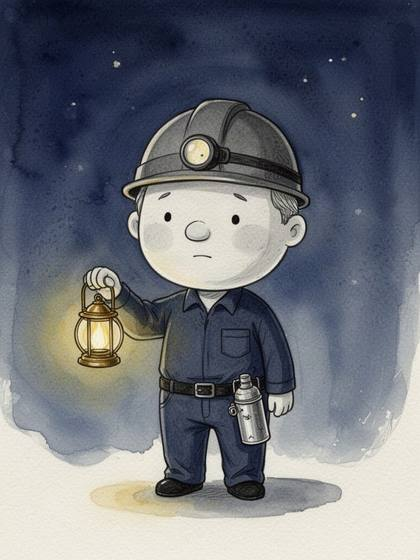
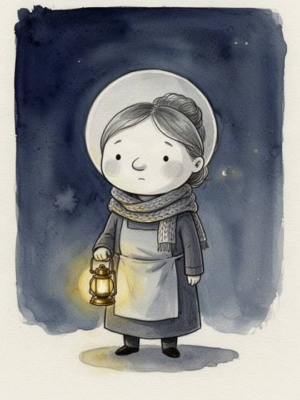
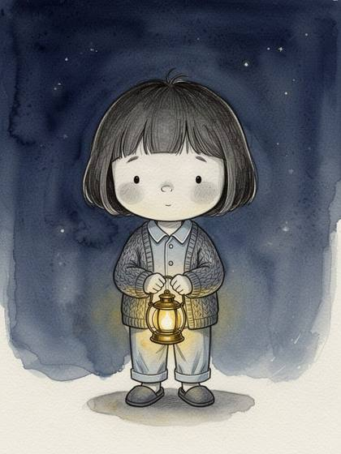
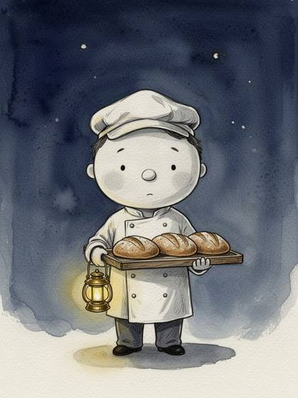
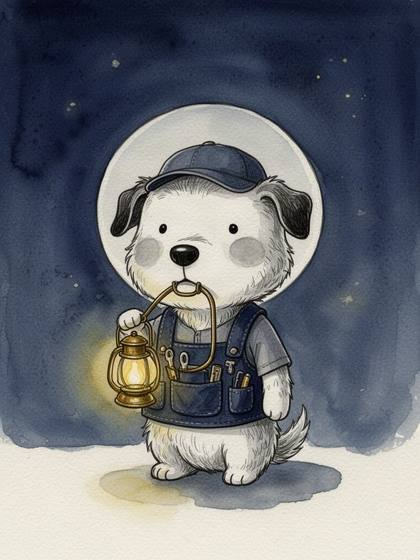
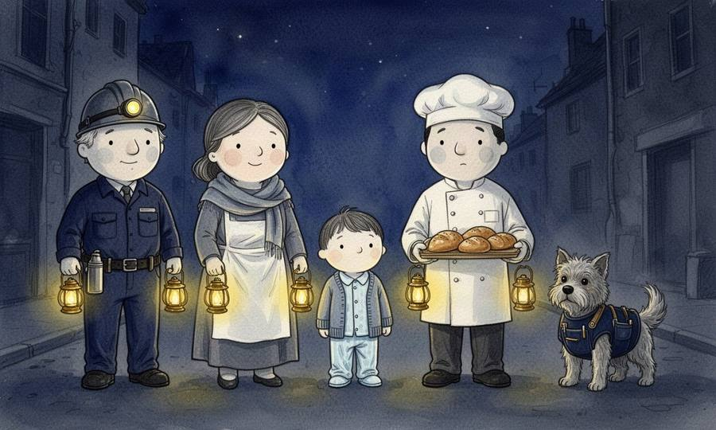
B ほそなが
5.5頭身・細長い手足・点の目と一本線の長い鼻。静かで大人っぽい
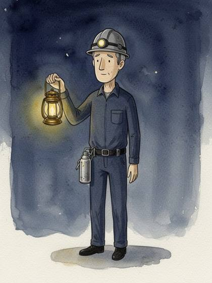
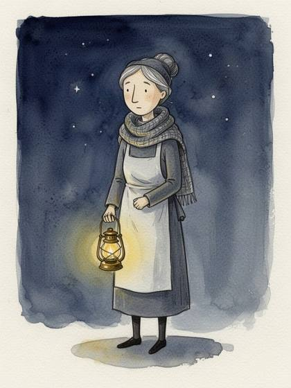
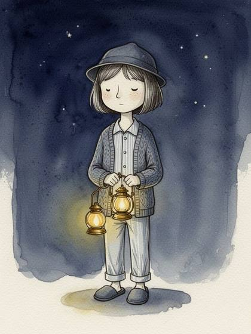
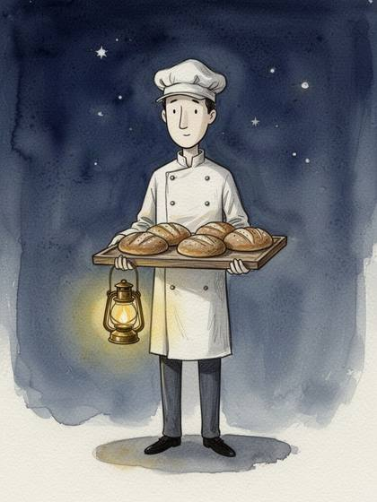
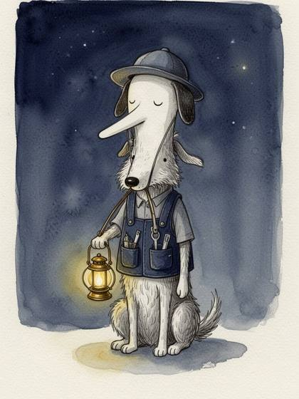
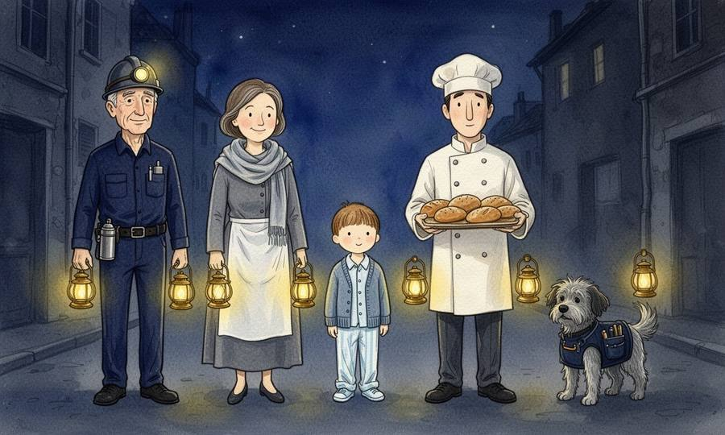
C ねむ目
3頭身・洋梨型・垂れた半目と大きい丸鼻。夜の住人らしいとぼけ顔
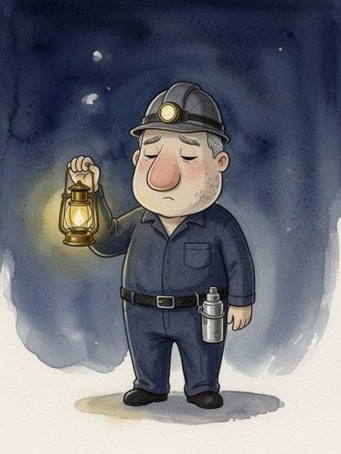
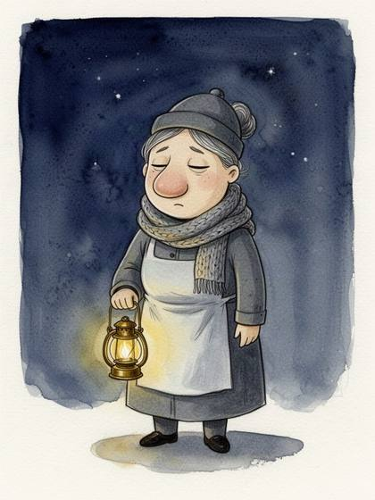
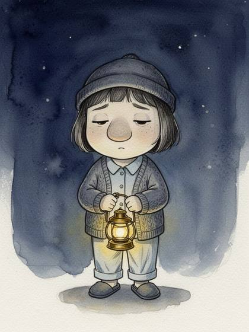
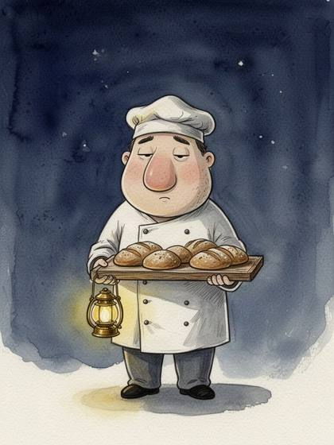
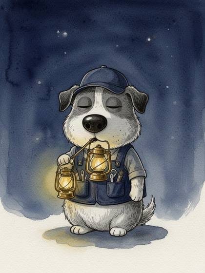
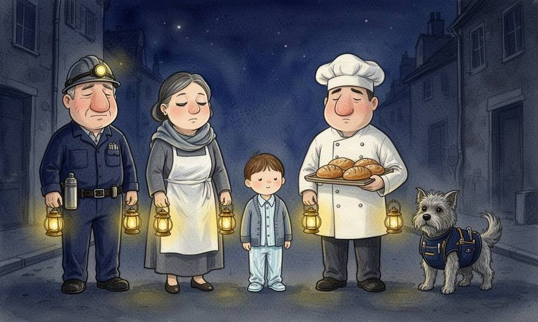
D よこがお
4頭身・積み木の体・いつも横顔。影絵のように見分けやすい
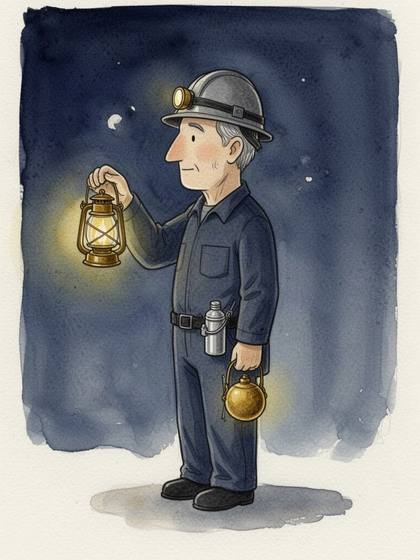
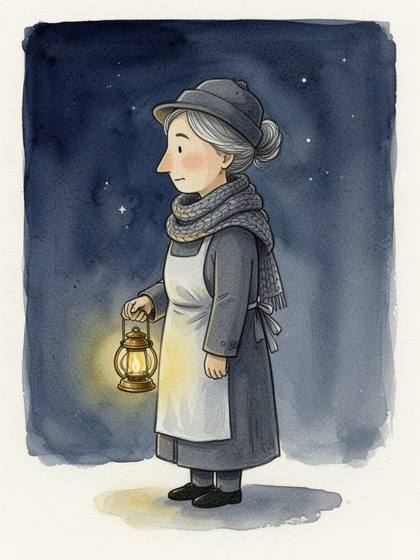
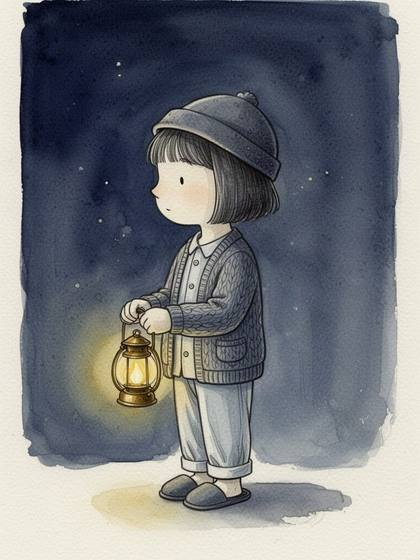
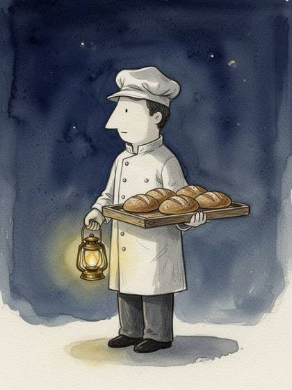
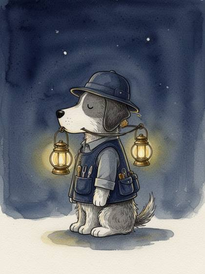
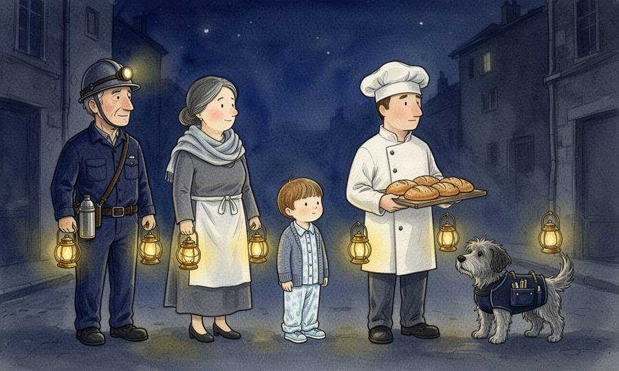
作り方：fal flux-2/flash（文章だけ・参照画像なし）、24枚で約19円。作家名・作品名はプロンプトに入れていない。
気づいたこと：1人ずつの絵は系統内でよく揃った。集合絵は頭身・顔の決まりが弱まり、4系統とも似た普通の絵本顔に寄った（ランタンも人数より多い）。決めた系統は、1人絵を参照画像にして集合絵を作り直すのが次の一手。